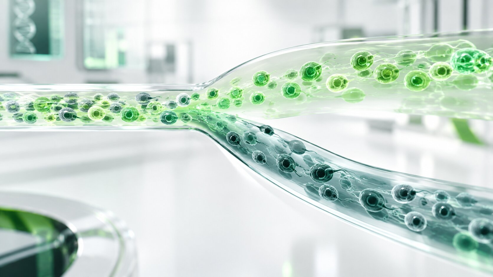

İleri Sperma Ayrıştırma Teknolojileri
Yüksek hassasiyetli optik akış sistemleri ve yenilikçi altyapımızla, hayvancılık endüstrisi için cinsiyeti belirlenmiş hücresel ayrıştırma çözümleri sunuyoruz.

Yerli Teknoloji, Sürdürülebilir Üretim
İthalata dayalı cinsiyet ayrıştırma teknolojilerini mühendislik yaklaşımımızla yerlileştiriyoruz. Amacımız, dışa bağımlılığı azaltarak yüksek canlılık oranına sahip, standart ve güvenilir sonuçlar sunmaktır.
Ulusal Altyapı
Ayrıştırma süreçlerini yerli Ar-Ge altyapımızla geliştirerek tedarik sorunlarını ortadan kaldırıyoruz.
Erişilebilir Maliyet
İşletmelerin operasyonel bütçelerine uygun, sürdürülebilir bir fiyatlama modeli sunuyoruz.
Standart Kalite
Her operasyonda aynı saflık ve yüksek canlılık oranını sağlayan, doğrulanmış protokoller kullanıyoruz.
Hücre Ayrıştırma ve Optik Analiz
Geliştirdiğimiz platform, hücreleri DNA yoğunluğuna göre yüksek hassasiyetle sınıflandırır.
X Kromozomu Hedefli Ayrıştırma
Süt verimini artırmak, sürüyü gençleştirmek ve damızlık kapasitesini büyütmek isteyen işletmeler için tasarlanmıştır.
Y Kromozomu Hedefli Ayrıştırma
Canlı ağırlık artışını, kas kütlesi gelişimini ve et verimini en üst düzeye çıkarmak isteyen işletmeler için tasarlanmıştır.
İşletmenize Sağladığı Avantajlar
Doğal doğum oranlarındaki belirsizliği ortadan kaldırarak, işletme kaynaklarınızı çok daha verimli yönetmenizi sağlıyoruz:
Planlı Üretim
Doğumlar tesadüfe bırakılmaz, tamamen hedeflerinize göre şekillenir. Gelecek planlaması kolaylaşır.
Hızlı Sürü Gelişimi
İstediğiniz özellikleri doğrudan yeni nesle aktararak sürü kalitenizi çok daha hızlı artırabilirsiniz.
Maliyet Tasarrufu
İhtiyacınız olmayan hayvanlar için harcanan yem ve bakım masraflarını önleyerek karlılığınızı artırırsınız.
İşletmeniz İçin Birlikte Değer Üretelim
Sürü planlaması ve teknolojilerimiz hakkında detaylı bilgi almak için uzman ekibimize ulaşabilirsiniz.